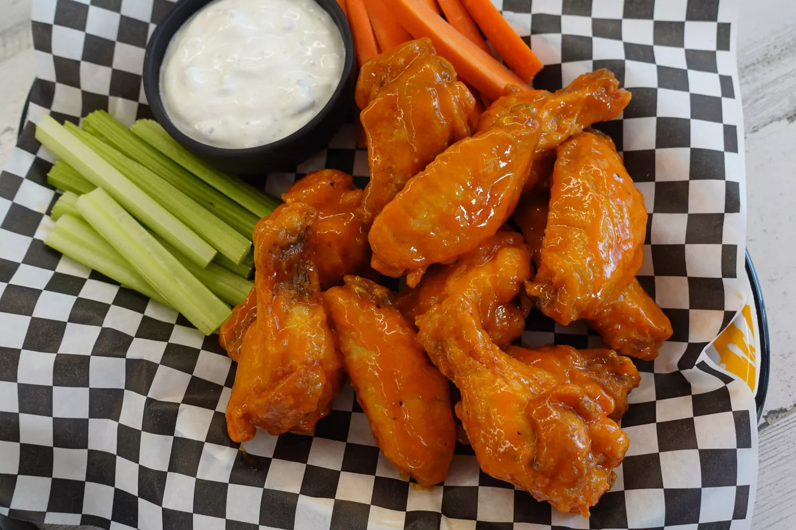

Buffalo Wings

Ingredients
- Chicken Wings
- Flour
- Paprika
- Cayenne Pepper
- Salt
- Butter
- Hot sauce
- Black pepper
- Garlic
- Oil for frying
Directions
- Coat the chicken wings with a mixture of flour, paprika, cayenne pepper, and salt. Refrigerate coated wings for at least an hour.
- In a saucepan on the stove, combine butter, hot sauce, pepper, and garlic. Stir until butter is melted, then remove from heat and reserve for later.
- Fry the chicken wings in a skillet filled with oil heated to 375 degrees F. Remove the wings and place them on a paper-towel lined plate to remove the excess oil.
- Drizzle the hot wings sauce over the fried wings or place the hot wings in a bowl with the sauce and mix together until combined.